视频回放 (1)_原文
2026年05月15日 13:33
欢迎来到 OpenDRIVE 参考线建模课程。我是 Nico。本视频将探讨 OpenDRIVE 中的关键概念——参考线。构建 OpenDRIVE 道路时，始终需要参考线。几乎所有重要特性（如车道）都附加在参考线上，这对驾驶至关重要。在本视频中，您将学习什么是参考线以及如何在 OpenDRIVE 中设计它。我们将回顾 OpenDRIVE 的层级结构，查看 XML 文件结构以定位参考线定义位置。随后，我将概述 OpenDRIVE 中不同的坐标系统，讨论参考线的定义元素，并展示 OpenDRIVE 如何对其进行建模。
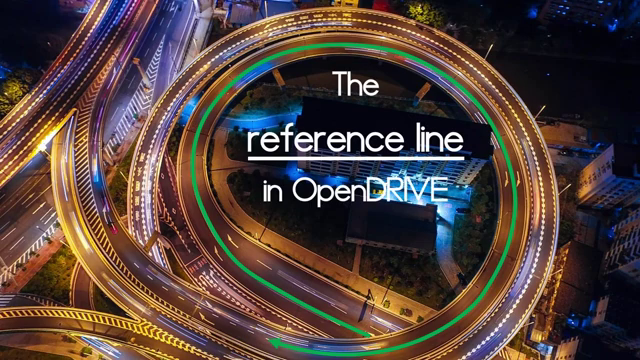
让我们回顾一下参考线在 OpenDRIVE 中的作用。要了解 OpenDRIVE 中道路的基本形状，您需要参考线。参考线定义了道路在俯视图（Plan View）中的弯曲与走向。它是 OpenDRIVE 的核心，车道、信号等特征都以此为基准进行定位。这是 OpenDRIVE 的高级 XML 结构，正如之前所述，每条道路都有自己的参考线，位于 Plan View 元素中。为了定义参考线的形状，我们使用几何图元。
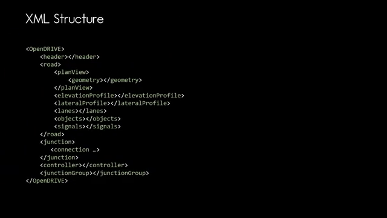
在深入细节之前，让我们快速了解 OpenDRIVE 使用的坐标系统。我们使用三种系统：惯性坐标系（世界坐标系，一切定义的基础）；参考线坐标系（定义 S 轴）；以及局部坐标系（用于定义对象并置入其他系统）。
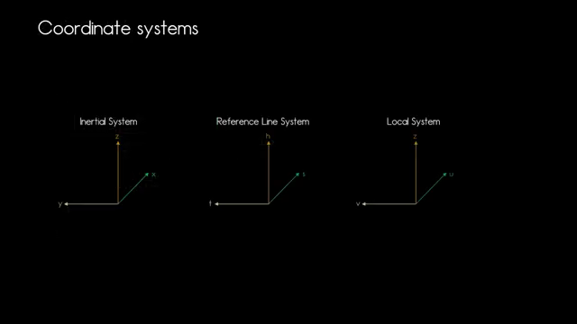
尽管这听起来很抽象，但让我们看看它们是如何相互连接的。
惯性系统是基础，一切都在此系统中定义。我们希望定义道路，因此从惯性系统中的道路定义开始。参考线元素的起点在局部系统中定义，并具有 X, Y 坐标（例如 X=2.5, Y=1）。
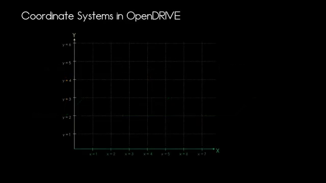
许多特征都附加在参考线上，例如代表信号杆的对象。对象在自身的局部笛卡尔坐标系中定义，并通过插入点置于参考线坐标系的特定 S 和 T 坐标处。
在 OpenDRIVE 中，对于俯仰角（pitch）、侧倾角（roll）和航向角（heading）的使用也有惯例。我将以惯性系统为例进行说明。
让我们以一个立方体为例，看看在没有初始旋转的情况下，俯仰角、侧倾角和航向角是如何应用的。航向角是绕系统 Z 轴的旋转，如图所示。俯仰角是绕 Y 轴的旋转。请务必记住，参考线坐标系没有俯仰角，侧倾角是绕 X 轴的旋转。在局部系统中，这是 U 轴；在参考线系统中，这是 X 轴。参考线系统仅具有航向角和侧倾角，没有俯仰角。这一点非常关键。
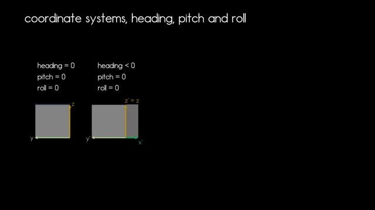
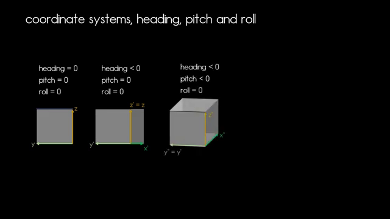
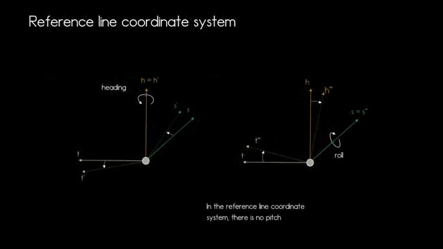
接下来，我们将看看如何实际定义参考线。
OpenDRIVE 中有几种不同的元素用于定义参考线。首先是线元素（Line），即具有起点、航向角和长度的直线，车辆行驶时转向角不变。设计曲线时，需要考虑转向角。OpenDRIVE 还可以定义螺旋线（Spiral），通过设置起始和结束曲率实现平滑过渡，避免转向角跳变。OpenDRIVE 还允许定义圆弧（Arc），即具有恒定曲率的参考线部分。这三种元素非常适合手动建模。
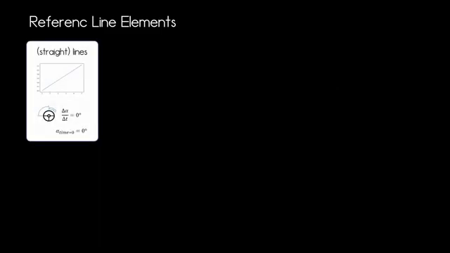
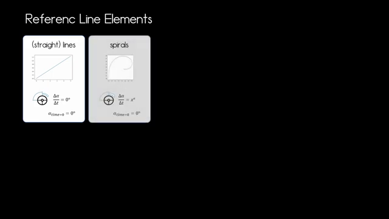
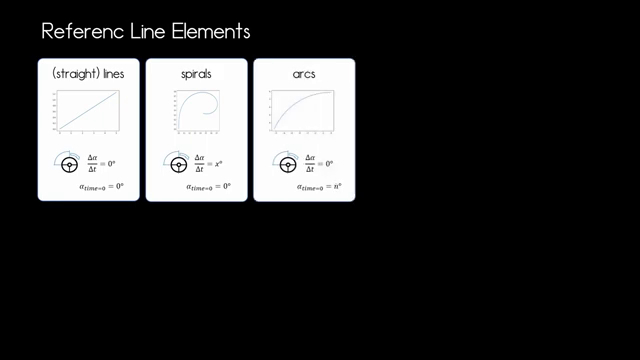
从测量数据推导参考线也是一种常见用例。当您拥有带优化参数的参考线方程时，OpenDRIVE 提供的三次多项式非常有用。不幸的是，该方法在 OpenDRIVE 1.6 中已被弃用，因为有更好的解决方案，即参数化三次多项式（Parametric Cubic Polynomial）。
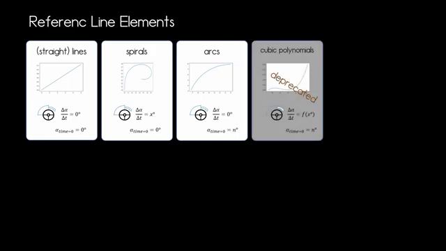
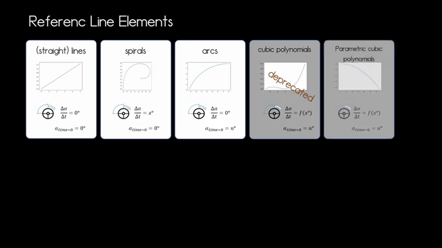
这是一个函数，当车辆驶过该元素时，转向角会相应改变。
每个参考线元素都具有以下属性：航向角、长度、在道路定义中的 S 位置，以及定义参考线元素起点的 XY 坐标，以及它在惯性系统中的位置。既然我们知道了可以使用哪些元素及其定义方式，接下来我们看看一些具体示例。
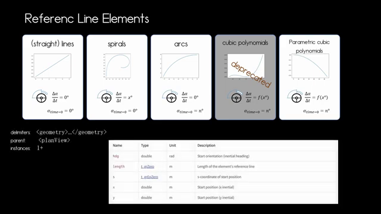
线元素是最简单的。如图所示，您只需要以下属性：首先是 S 元素，用于指示参考线坐标系的基准位置（例如 s=4）；然后是 XY 坐标，指示参考线元素在惯性坐标系中的起点（例如 x=-47.2, y=0.723）；最后是航向角。
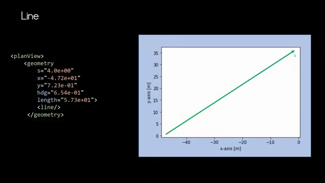
我们确定了参考线元素的指向。该航向角仅指定参考线元素第一个点的方向。如果定义了其他元素，终点处的航向角通常会与起点不同。接下来添加长度属性。对于直线而言，这非常简单。只需添加 line 标签即可。
如前所述，螺旋线（Spiral）的曲率会发生变化。我们需要定义这种变化，因此需要设置起始和结束曲率。在 OpenDRIVE 中，曲率变化是线性的，这一点非常重要。此外，仍需要 X, Y, 航向角和长度属性。圆弧（Arc）具有恒定曲率，行驶时转向角不会改变。定义圆弧时，同样需要指定 S, X, Y, 航向角、长度和曲率。这三种元素是手动设计道路时最常用的。
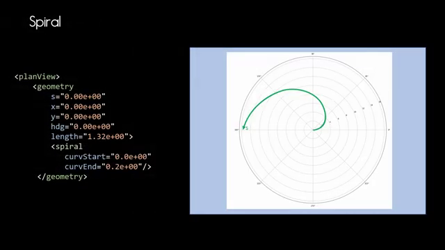
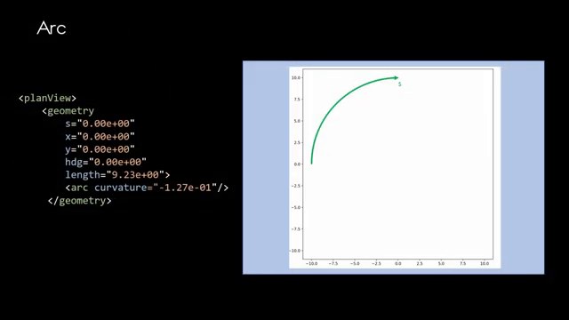
接下来，我们将了解参数化三次多项式，它常用于将参考线拟合到测量数据。这段参考线定义在局部坐标系中。U 轴和 V 轴的值由两个独立方程计算。
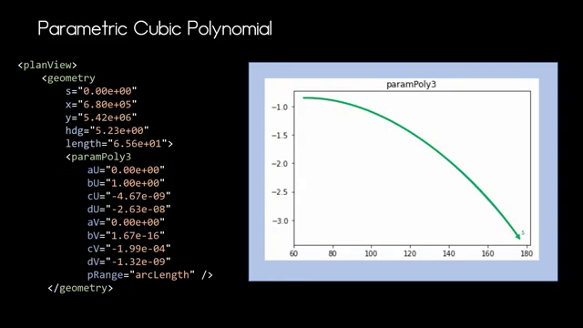
首先计算 U 轴的值。结果近似于一条直线。此处使用的是三阶多项式，参数放置在图形下方显示的多项式中。
接下来计算 V 轴的值。垂直轴显示 U 或 V 值，水平轴显示用于计算的 P 值。我取了 1000 个采样点。一旦计算出这两个图形（即 U 和 V 值），就可以将它们合并。将 U 值应用于水平轴，V 值应用于垂直轴，这就是我们的参考线元素。
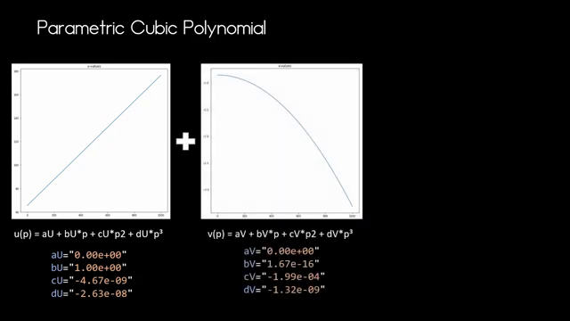
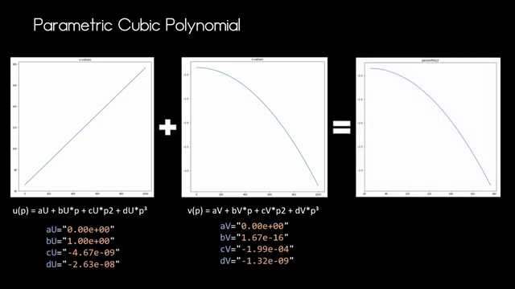
最后，只需应用航向角，并根据定义中给出的 X 和 Y 坐标将这段参考线置于惯性系统中。
让我们看一个简单的例子：添加一条直线、两条螺旋线和两条圆弧，形成一条平滑的参考线。首先放置直线，连接一条螺旋线以达到曲线所需的曲率（由圆弧表示）。当曲线稍微变宽时，应用另一条螺旋线和圆弧来调整曲率。这样就得到了一条曲率平滑、无突变的参考线。
在组合参考线元素以形成平滑参考线时，必须确保每个元素的终点航向角与下一个元素的起点航向角完全相同。这一点非常重要。例如，直线元素的终点航向角应与螺旋线的起点航向角一致。如果连接点的航向角不一致，车辆行驶时会导致转向角突变。
现在您已经基本了解了 OpenDRIVE 中的参考线及其设计注意事项。OpenDRIVE 还有很多值得探索的内容，感谢观看，如果喜欢本视频，请点赞并订阅，下次见。